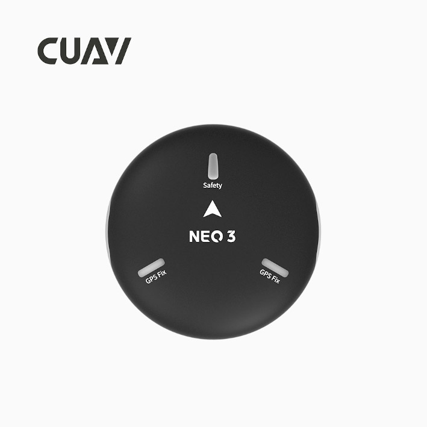
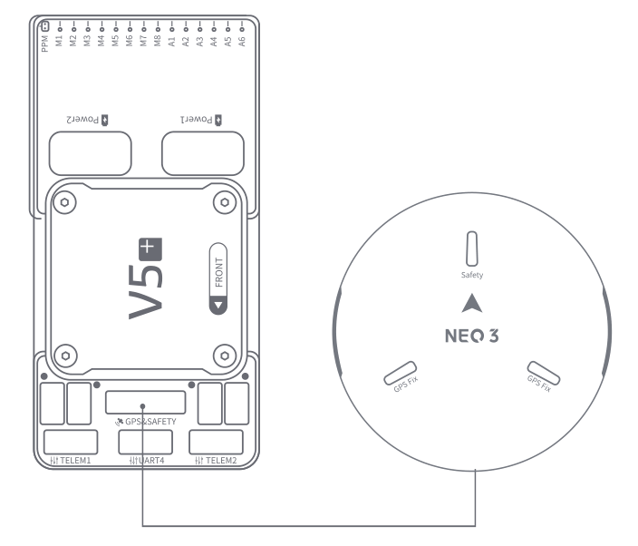

NEO 3 GPS¶
Neo 3 is a UAV positioning module developed by CUAV. It integrates industrial-grade compass, barometer, autopilot status light, buzzer, and safety switch all in one package. It has the characteristics of high safety and strong interference resistance.It integrates ublox m9n module and can receive signals from GPS, Galileo, GLONASS and Beidou at the same time.
{kind=link}
Note
NEO 3 is supported in ArduPilot 4.0 firmware (and higher).
Key Features¶
Processor
STM32F412
Sensors
Compass:IST8310
Barometer:MS5611
RTK Receiver
Ublox M9N
GNSS Bands
GPS/QZSS L1 C/A,GLONASS L10F ,BeiDou B1I,Galileo E1B/C,SBAS L1 C/A: WAAS, EGNOS, MSAS, GAGAN
Number of concurrent GNSS
4 Simultaneous reception of satellite information
Number of satellites(MAX)
Up to 32
Nav. update rate
RTK Up to 25HZ
Position accuracy
Up to 1.5M
Acquisition
Cold starts 24 s
Aided starts 2 s
Reacquisition 2 s
Sensitivity
Tracking & Nav -167 dBm
Cold starts -148 dBm
Reacquisition -160 dBm
Protocol
UART+I2C+IO
Interface Type
GHR-10V-S
Input voltage
5V
Operating temperature
-10~70℃
Size
60x60x16mm
Weight
33g
Purchase¶
You can buy it from CUAV store.
Connect to CUAV v5+¶
{kind=link}
Note
The connection to other autopilots is similar.
{kind=link}